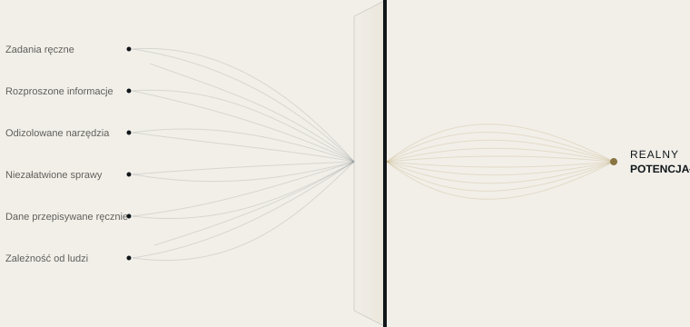

Automatyzacja
Zamieniamy powtarzalne zadania w procesy automatyczne, według zasad ustalonych wspólnie z Państwem.
AUTOMATYZACJA ZASOBÓW
Większość firm nie potrzebuje kolejnych narzędzi. Potrzebuje wiedzieć, gdzie ucieka im czas, informacje i uwaga.
SKURX SYSTEMS wskazuje, gdzie firma traci potencjał, i zamienia go w bardziej przejrzyste, połączone i wydajne sposoby pracy.
CO ROBIMY
Wskazujemy, gdzie Państwa firma traci potencjał, i uwalniamy go dzięki automatyzacji, połączonym narzędziom i sztucznej inteligencji tam, gdzie ma to sens.

NASZE USŁUGI
Zamieniamy powtarzalne zadania w procesy automatyczne, według zasad ustalonych wspólnie z Państwem.
Tam, gdzie reguła nie wystarcza: AI wzmacnia Państwa zespół, a nie go zastępuje.
Łączymy Państwa narzędzia, aby informacje przechodziły z jednego do drugiego bez niczyjego udziału.
JAK PRACUJEMY
Nie zaczynamy od technologii, lecz od pytania: gdzie Państwa firma traci potencjał i dlaczego?
Poznajemy Państwa firmę od środka, obserwując codzienną pracę zespołu.
Ustalamy, gdzie i dlaczego tracony jest czas, informacje lub potencjalni klienci.
Mówimy, co byśmy zmienili, a czego nie warto ruszać.
Uruchamiamy rozwiązanie, testujemy je razem z Państwem i dopracowujemy, aż działa tak, jak potrzebuje zespół.
PIERWSZY KROK
W ciągu tygodnia analizujemy, jak pracuje Państwa firma, i przekazujemy jasną mapę: co pochłania potencjał, co można zautomatyzować i w jakiej kolejności. Raport pozostaje u Państwa, niezależnie od decyzji.
Każdy proces opisany prostym językiem.
Konta, narzędzia i dane należą do Państwa.
Widać, co i kiedy zrobiła każda automatyzacja.
Jeśli zakończymy współpracę, wszystko nadal należy do Państwa.
PRZYKŁADY Z BRANŻ
Przykładowe scenariusze oparte na typowych sytuacjach. Pracujemy z firmami z każdej branży, w całej Hiszpanii.
Wszystko działa dalej, nawet gdy w biurze nie ma już nikogo.